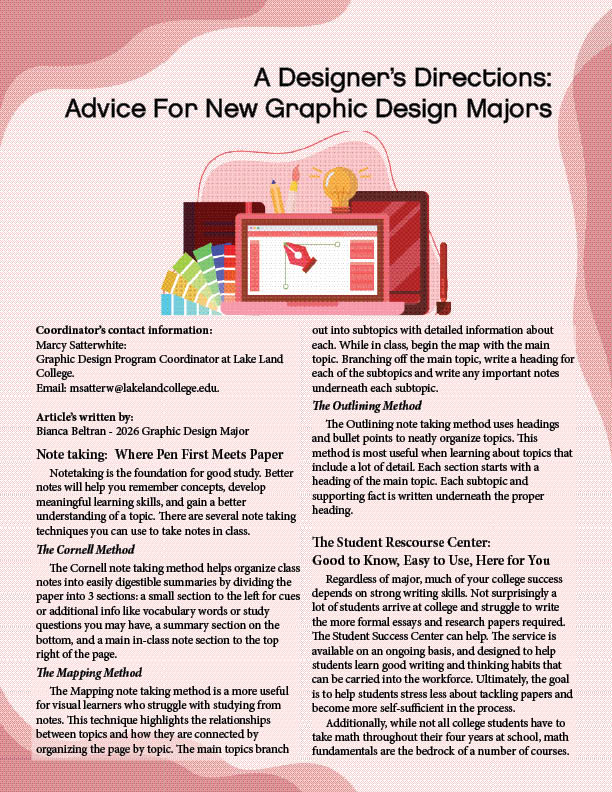
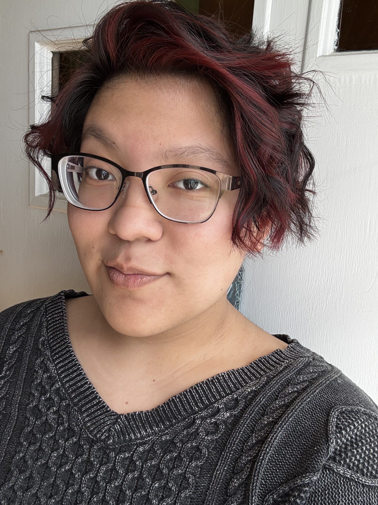

Newsletter Design

Created a visually appealing newsletter for a client, focusing on readability and brand consistency.


As a passionate graphic designer, I firmly believe that great design must seamlessly blend beauty with functionality.
Over the past two years, I have honed my craft working with diverse clients across multiple industries, including music, food, marketing, and education, bringing each brand’s unique story to life through thoughtful and compelling visuals.
My expertise spans branding, illustration, and web design, allowing me to create experiences that are not only visually striking but also intuitive and user-centered.
I thrive on exploring new creative possibilities and constantly push the boundaries of conventional design to deliver innovative solutions that resonate with audiences.
I embrace challenges with enthusiasm and view every project as an opportunity to experiment, learn, and exceed expectations. Every project is an opportunity to innovate, learn, and deliver solutions that truly elevate my clients’ visions. I aim to create designs that leave a lasting impression, balancing aesthetics, functionality, and meaningful storytelling at every turn.

Created a visually appealing newsletter for a client, focusing on readability and brand consistency.

Developed a visually appealing flyer for a client's event.
MHS Print Shop
2521 Walnut Ave, Mattoon, IL 61938Wave Graphics
3456 Logan Road, Mattoon, IL 61938If you’d like to collaborate or have a project in mind, please fill out the form below. I’ll respond promptly!